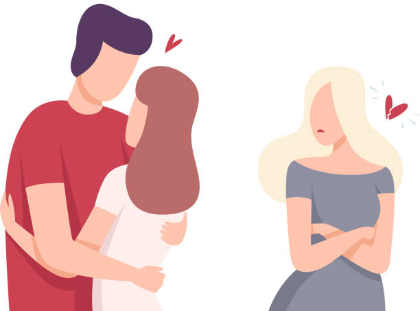
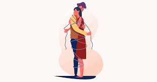

Você descobre que seu namorado te traiu, qual será sua escolha?
Você é traída novamente
Ele se mostra arrependido, e te pede uma chance.
Você descobre que está grávida.
Depois de 1 mês, ele termina com você e fica com a amante.
Você supera, encontra outra pessoa e são felizes juntos.

Ele continua te traindo e vc se torna dependente emocional.
Você sofre muito, mas depois de um tempo supera e segue em frente.

Ele se torna um pai ausente e vc e sua filho(a) tem uma vida conturbada.
Sua vida se torna mais feliz, apesar das dificuldades, sua famíla fornece total apoio.